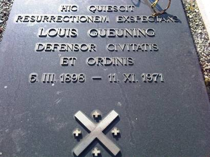

> nieuwsbrief > 2012- nr 1
Inhoud
We worden elk jaar opnieuw rond de
jaarwisseling geconfronteerd met de – uiteraard weer eens naar boven –
aangepaste posttarieven. Deze uitgaven, voor de driemaandelijkse Nieuwsbrief Joris van Severen en voor
het Jaarboek Joris van Severen slaan
telkens weer een aanzienlijke bres in onze begroting. Na jarenlang de
ledenbijdrage behouden te hebben op 25 € zien we ons thans verplicht de
basisbijdrage
op te trekken tot 29 €. Vanaf 35 € wordt u als steunend lid
geboekt. Wie
lid is van bvb het Davidsfonds kan vergelijken en vaststellen dat onze
aangepaste ledenbijdrage parallel loopt met qua omvang gelijkwaardige
uitgaven
uit dat fonds. We laten daarbij wel commerciële foefjes achterwege: het
is dus
niet 29,95 €; wel 29 € rond. Waarbij we er – als in het verleden – op
hopen dat
onze leden hun bijdrage spontaan naar boven afronden. In de bijdrage is
als
vanouds het abonnement op onze Nieuwsbrief
Joris van Severen en op het – al 16e – Jaarboek
Joris van Severen – zijn persoon, zijn gedachten, zijn
invloed, zijn werk begrepen. Bijliggend
betaalformulier
kan u daarbij dienstig zijn.
Rechtzetting
Stichting Louis Gueuning
In onze vorige Nieuwsbrief
(p. 6) kon me lezen dat de Stichting Louis Gueuning “in het leven
geroepen
werd na zijn dood”. Dit blijkt onjuist te zijn. In werkelijkheid werd
de
Stichting opgericht op 30 maart 1968; een paar weken na Gueunings 70e
verjaardag (5 maart).
Fotobiografie
Joris van Severen en het Verdinaso
Voor het jaar 2014 plannen
wij andermaal
een jaarboek
buitenreeks.
Huldebetoon aan Louis Gueuning
te
Mainvault
op 5 november 2011
Joseph
E.
Peeters
Straks veertig jaar geleden, op 15 november
1971,
stonden wij hier voor uw graftombe, om uw stoffelijk overschot toe te
vertrouwen aan uw kleine vaderland – Henegouwen - dat aan de westzijde
ligt van
de XVII Provinciën van Keizer Karel de Vde, die deze staat en dit volk
der
Nederlanden één en onverdeelbaar, onafhankelijk en zelfstandig had
verklaard,
teneinde hen toe te laten hun Europese roeping van synthese en
federatie te
volbrengen én de Rijksgedachte zin en inhoud te geven.
Indachtig uw grote voorganger Joris van
Severen, op
wiens graftombe te Abbeville u hebt laten beitelen “Pater Patriae” en
wiens
testamentuitvoerder u bent geworden, hebben wij u, op uw grafsteen,
uitgeroepen
tot “Defensor Civitatis et Ordinis”.

De grafsteen
van Louis Gueuning op het kerkhof te Mainvault
Sindsdien bent u nooit uit de actualiteit
van de
geschiedenis der Nederlanden verdwenen. Deze actualiteit, vandaag, legt
ons op
“te doen wat moet gedaan worden”: heden is dat een korte en duidelijke
boodschap door te geven aan onze nakomelingen, (want opvolgers zullen
wij, hoe
dan ook, hebben zolang de drie grote Europese stromen van het
Deltagebied der
Nederlanden, over berg en dal en over alle kunstmatige grenzen heen, de
geopolitieke ruggengraat van het Avondland bevruchten):
·
opvolgers
in de lijn van onze grootste “vaders des
vaderlands” Clovis, Karel de Grote, Filips de Goede, Karel de Stoute,
Jacob van
Artevelde, Keizer Karel, Willem van Oranje, …
·
opvolgers
die de schare zullen vervoegen van hen, die onze
grootste vorsten geschraagd hebben en gestaafd in hun traditionele
actie om het
kerngebied van Europa en zijn beschaving te behoeden en te laten
uitstralen
over de wereld.
Wat
houdt deze
“Boodschap aan onze nakomelingen” in?
·
Ten
eerste: “het is niet de mens die de Taak kiest; het is de
Taak die de keuze van de mens doet”;
·
Ten
tweede: “het is noodzakelijk onafgebroken wilskracht op
te brengen en steeds in dezelfde richting, met hetzelfde natuurgetrouwe
doel”;
·
Ten
derde: “men moet er zich bewust van zijn dat niet eerst
en vooral het resultaat telt, maar wel de voortdurende inspanning om
het
gestelde doel te bereiken en zich geestelijk te verrijken, als Persoon
en als
Gemeenschap”.
Samen gevat: wat in de komende harde tijden
“het koren
van het kaf zal scheiden” dat is, met een Latijns woord gezegd:
“Constantia”,
wat noodzakelijkerwijze beantwoordt aan het devies van Louis Gueuning:
“Nulli
concedo” – “Ik geef niets toe”, dit wil zeggen: Joris van Severen heeft
gelijk.
Meteen zijn dit de enige voorwaarden om te
slagen. En
wij, Louis Gueuning, U en wij, wij zoals u, zijn ervan overtuigd, dat
ook onze
nakomelingen zullen slagen in de harde taak van het herstel der
Nederlanden. “Gloriosior
exsurgo” – “Ik herrijs roemrijker” hebt u, Louis Gueuning, als spreuk
gegeven
aan de Leeuw met de Zeventien Pijlen – roemrijker, glorievoller dan
zelfs de
vorige tweeduizend jaar.
Onder de hoede van de aartsengel
Sint-Michiel, getrouw
aan uw roeping, die u gedurende meer dan dertig jaar (1939-1971)
bezield,
belichaamd en gevolgd hebt, bezegelt u het woord van Joris van Severen:
“het
geloof, dat is het stalen pantser van de wil.”
[Joseph E. Peeters is permanent secretaris
van de Stichting
Louis Gueuning]
Grafkruis Dinaso-militant Robert Leuridan wordt hersteld
Het grafkruis
van Robert Leuridan
De laatste jaren bleek het grafkruis nogal
te lijden
gehad te hebben van de weersomstandigheden en verkeerde het in een
eerder
deplorabele toestand. Zo werd ons gemeld door een van onze leden, met
de vraag
of daaraan vanuit het Studiecentrum Joris van Severen iets te verhelpen
viel.
We oordeelden dat dit niet zozeer toe de
taken van het
Studiecentrum kon gerekend worden (die zich beperken tot het
studie-aspect) dan
wel eerder tot het domein van de Stichting Joris van Severen behoorde
(die
instaat voor de jaarlijkse herdenkingen te Male en te Abbeville en het
onderhoud van het dubbelgraf aldaar).
Vanuit dit midden werd het probleem
aangekaart bij de
volksvertegenwoordiger Danielle Godderis-T’Jonck, wiens schoonvader
Daniël
Godderis overigens destijds Verdinaso-hoofdman was te Alveringem. Op
haar beurt
nam zij in hieromtrent contact op met de burgemeester van Alveringem,
die haar
verzekerde dat vanuit de gemeente de nodige inspanningen zouden worden
gedaan
tot de instandhouding van het grafkruis.
Namens het Alveringemse schepencollege
mochten wij op
20 oktober de bevestiging ontvangen dat het “College besliste om het
grafkruis
van de voormalige Dinaso-militant Robert Leridan op het kerkhof van
Alveringem in
eigen regie te herstellen en te onderhouden.”
We hebben niet nagelaten het Alveringemse
gemeentebestuur van harte te danken voor deze beslissing, die mede de
instandhouding van een uniek getuigenis voor de geschiedenis van de
jaren van
het interbellum vertegenwoordigt.
Bij het afscheid van het maandblad ‘Delta’
“Als één der eersten van de
kleine schaar van hen die geloven
in het licht van de nieuwe dag zonder hoop dit licht ooit zelf te mogen
aanschouwen.”
(uit zijn
gedachtenisprentje)
DESIRE
BINNEMANS
Eisden, 1
Vooraleer Delta
definitief geschiedenis wordt, achten wij het onze plicht om er aan te
herinneren dat het weldra, op Nieuwjaarsdag 2012, juist honderd jaar
geleden
zal zijn dat Desiré Binnemans in het Limburgse Eisden het levenslicht
aanschouwde. Wij doen dit omdat wij beseffen dat hij wellicht diegene
is van
onze kleine kampgemeenschap die het zwaarste offer heeft gebracht,
namelijk dat
van zijn eigen leven.
Toen in 1944 de geallieerde opmars ten
Noorden van
Antwerpen tijdelijk stokte aan het Albertkanaal waar de Duitse troepen
nog ruim
drie weken lang hardnekkig weerstand boden, sneuvelde hij op 32-jarige
leeftijd
bij een poging om vanuit het nog bezette gebied (Merksem) het kanaal
over te
steken en contact op te nemen met leden van de Joris van Severen Orde
en andere
dinaso’s aan de overzijde van het kanaal. Wij weten niet of hij door
een Duits,
dan wel door een geallieerd kogelsalvo getroffen werd.
Desiré werd bijgezet op het kerkhof van
Sint-
Desiré Binnemans had als beroep timmerman,
maar hij
was wel iemand die zijn ambacht met fierheid uitoefende. Zo was het
bekend dat
hij nooit een werkdag afsloot zonder zijn werkplaats netjes op te
kuisen en
alle gebruikte gereedschappen zorgvuldig op de plaats waar zij hoorden
terug te
leggen.
Jaarlijks ging wijlen André Godderis, die
in het kader
van de Joris van Severen-Orde met hem een bijzondere band had gehad,
zijn graf
in het najaar bezoeken. Ik, die Desiré Binnemans nooit persoonlijk heb
gekend,
had het voorrecht hem gedurende enkele jaren daarbij te mogen
vergezellen.
Alvorens het bestaan van Delta
af te sluiten en onze werking aan de archieven toe te
vertrouwen, dachten wij deze verjaardag niet onopgemerkt te mogen laten
voorbij
gaan. Dit verminkte en ongelukkige volk, met een jeugd die wanhopig op
zoek is
naar een geestelijk houvast, kan het voorbeeld van iemand die voor zijn
ideaal
ook zijn leven veil had best gebruiken.
Desiré Binnemans stijgt daardoor torenhoog
uit boven
het gekakel van de bonte bende politicasters die ons politiek firmament
momenteel verduisteren. Zijn voorbeeld mag niet vergeten worden.
Antoon van
Severen (Wingene
20
Joris van Severen en de Graal (1)
Kurt
den Dietser
In een destijds korte tijd
verschijnend tijdschrift binnen het Antwerpse studentenmidden vonden we
(verspreid over een drietal afleveringen) onderstaande aan Joris van
Severen
gewijde tekst terug.Wie onder het pseudoniem
‘Kurt den
Dietser’ schuilging wisten we niet te achterhalen. Zijn verhaal loopt
bijwijlen
over eerder verwarde nevenpaden die wel eens dreigen vaste grond te
verliezen.
Anderzijds opent hij dan weer nieuwe onvermoede gezichtseinders.We
dachten het onze lezers
als
documentair curiosum niet te mogen onthouden. In dit nummer brengen we
het
eerste deel van dit al bij al merkwaardig essay.
Van Severen heeft ons bepaalde gedachten
meegegeven,
die volgens ons op een grondige studie berusten, een studie van de
menselijke
persoonlijkheid, zijn gedragingen en van hetgeen de mens juist tot mens
maakt.
In een vorig nummer hebben wij reeds op de gelijklopende sferen gewezen
tussen
enerzijds, de Graallegende, die ons vertelt omtrent Koning Arthur,
oorspong van
alle recht en orde, en anderzijds, de gedachte van Joris van Severen,
waarbij
God oorsprong van alle recht en orde wordt genoemd.
In dit nummer gaan wij systematisch de
praktische
gedachten van de filosoof-politicus onderzoeken, om te zien hoe de
parallellen
verder verlopen.
“Leven betekent voor elke mens rusteloos
worstelen met
al de vraagstukken die zich dag aan dag aan hem opdringen; rusteloos
die
vraagstukken oplossen, zegevoerend oplossen; dat wil zeggen, op een
wijze die
geen andere zijn kan dan de rechte; die orde schept en vrede sticht;
het leven
opricht en voortstuwt in stralende vroomheid, hetgeen betekent:
waarachtigheid
en dapperheid.”
Deze gedachten komen ons voor, als de
zuiverste
ridderlijkheid. De edelmoedigheid van Van Severen komt nogmaals tot
uiting in
zijn visie omtrent de realiteitsgedachte. Hierbij zou je hem bijna
verwijten
een aanhanger van Nietzsche te zijn. De volgende passage haal ik
speciaal aan
in vergelijking met die de beroemde filosoof om de betekenis ervan te
verduidelijken.
“We moeten de moed hebben de zaken te zien
zoals ze
zijn, de moed hebben de schrikwekkende werkelijkheid met nuchtere
onvervaarde
blik te bekijken. Niet alleen de moed hebben, maar het moet onze trots
zijn,
aldus kijkende. de gebeurtenissen te beheersen, om ze te leiden
waarheen wij
besloten hebben ze te leiden.” (Joris van Severen)
“Uw vi
Deze zinsnede geeft duidelijk weer dat ook
Van Severen
doorspekt is van de tragische gedachte die uit een heidens-gerichte
filosofie
spruit en aan de basis ligt van de Noordse en Keltische mythologische
beelden
van de eeuwig durende strijd voor het Hogere. Nu doet op Ierland en
Schotland
nog steeds het verhaal de ronde dat als de nood het hoogst is, Koning
Arthur
zal terugkomen, met zijn volledig leger om de volksvreemde krachten te
weren
uit het traditionele gebied. Deze gedachte is uitvoerig terug te vinden
in de
Noordse mythologie van het Wilde Heir waarvan 0din de aanvoerder is.
De strijdermentaliteit heeft een zeer diepe
traditie
binnen de Indo-Europese heidense gedachten. We vinden deze filosofie
trouwens
terug bij verscheidene heidense volkeren en Julius Evola vermeldt
hierover
uitvoerig in zijn boek Revolte gegen die
Moderne Welt:
“Wer
auf dem Wege Gottes getötet wird, der wird der Erkenntnis nicht
verlustig
gehen: (Gott) wird sie lenken und ihren Geist ausrichten… in diesem
Fall, wo es
sich um den tatsächlichen Tod im Kampf handelt, finden wir also das
Gegenstück
zur ’mors triomphalis’ (dem triumphalen Tod), von dem die klassischen
Überlieferungen sprachen: Wer im ’Kleinen Krieg’ den ’Grossen Heiligen
Krieg’
durchlebt hat, hat eine Kraft geweckt, die ihn wahrscheinlich die Krise
des
Todes Überwinden und dem Schicksal des Hades lässt, nachdem sie ihn vom
’Feind’
und vom ’Ungläubigen’ bereits befreit hat.“
Geen wonder dat we ook in de Graallegende
een
heldhaftige houding terugvinden. Wanneer ieder jaar, op Pinksteren, de
Graalridders samen komen, voor ze aan tafel kunnen gaan, moet er een
speciaal
heldhaftig gebeuren plaatsvinden. Die gebeurtenis wordt telkens door
een andere
ridder volbracht, en het mag ons dan ook niet verwonderen als Evola
meent, in
zijn Le mystère du Graal, dat elke
ridder een niveau van Koning Arthur
vertegenwoordigt. De ridders zien de vi
Doch, dat is volgens Van Severen de zin van
ons leven.
Dit was ook hetgeen verwezenlijkt werd bij
het
koningschap van Koning Arthur. De leider van de Ronde Tafel was de spil
waarrond alles draaide. Hij bracht eenheid onder zijn volk, en
herstelde Recht
en Orde.
Deze Orde speelt nu juist een essentiële
rol bij de
Rijksgedachte van Van Severen. Hierover zegt hij het volgende:
“De mensen en volkeren beseffen meer en
meer dat
‘arbeid en brood’, en dus welvaart, alleen mogelijk is waar Orde
heerst, en dat
alleen uit de Orde de vrede kan ontstaan: ‘tranquilitas ordinis’, de
gerustheid
der Orde.”
Hierbij voegt Van Severen nog zijn gedachte
van de
organisch gestructureerde maatschappij die hij samenvat onder de
slagzin “De
prins in zijn raden, het volk in zijne staten!” Deze gedachte
heeft hij
gebouwd op een zeer hiërarchisch gestructureerde staatsvisie, waarbij
iedereen
zijn plaats kent, en probeert het hoogste in zijn eigen beroep te
realiseren.
Dit is vooral ook de gedachte die in Indië aan de basis van het
kastensysteem
ligt, waarbij elke persoon die in zijn kaste geboren wordt, daar moet
blijven,
en daar proberen zijn eigenheid te verwezenlijken. Een çudra
bijvoorbeeld,
voelt zich even trots op zijn kaste (op
één na de laagste kaste in India) als de Brahmaan (de hoogste graad),
juist
door het feit dat hij ervan overtuigd is dat hij Koning kan worden in
zijn
eigen kaste, net als de Brahmaan in zijn eigen graad de Kroon op zijn
werk kan
verkrijgen.
In de Graallegende, zoals
wij die kennen, vertegenwoordigt elke Graalridder een bepaalde graad
van
ontwikkeling, en elke ridder gaat op zoek naar de heilige Graal, en probeert
op zijn manier, volgens zijn graad de beker te
bemachtigen. Slechts enkelen slagen daarin.
Ook in de middeleeuwen
vinden we nog resten van het oude gradensysteem en wel in de gilden,
waarbij
het Godgerichte beroep (want het beroep was een analogie van de
Goddelijke
Wijsheid) stapsgewijze aan de noviet werd overgedragen. Daarbij kreeg
deze
eerst de naam ‘leerling’, vervolgens ‘knecht’ en ten slotte ‘Meester’
(Magister). In de daaruit ontstane metselaarsgilden werkte men ook met een
gradensysteem dat later ontaarde in het ancieniteits-graadstelsel.
Van Severen heeft het ook
over zijn gedachten die hij het verdedigen waard vindt. Hij wil dat
zijn
gedachten vertolkt worden door een kleine groep mensen, die niet
terugdeinzen
dergelijke visies te bestuderen en te volgen. Hij schrijft hierover
zeer
duidelijk:
“Macht der gedachte. Wanneer ge in
het openbaar de vereniging der Nederlanden verdedigt, ziet ge nog zeer
dikwijls
’Groot-Nederlanders’ op u afkomen, die met knipogende wijsheid u de
zeer wijze
raad geven: altijd eraan denken, nooit erover te spreken! Ik geloof
dat, moest
die raad in acht genomen worden, de gedachte zelf van de hereniging der
Nederlanden spoedig op een mummie zou gaan gelijken: zwijgen zou snel
doodzwijgen worden!
Om te leven
moet een gedachte, een denkbeeld, zich bewegen en werken. Ze moet
dynamisch
zijn. De beweging, dat werk, dat dynamisme, het moet van ons komen, ven
diegenen die de gedachte in werkelijkheid willen omzetten.
We hebben niet
de macht van het geld, noch de macht van de massa! Reden te meer om de
macht
van de gedachte zo krachtig mogelijk te hanteren. Ideeën die eenmaal
klaar
gedacht worden, en klaar uitgedrukt, in staalzuivere vorm, worden
gedreven,
alle moeilijkheden overwinnen, en werkelijk geschiedenis maken!”
Lijkt deze houding niet
sterk op die van de Graalridders? Zij kwamen trouwens ook altijd op
voor hun
gedacht en lieten dit ook blijken in hun land. Toen één van de ridders bemerkte
dat Sir Lancelot verliefd was op Guinevere, uitte hij hierover zijn
misnoegen
op de jaarlijkse vergadering, zonder ook maar één vorm van schaamte te
vertonen
ten opzichte van Lancelot of Guinevere. Hij kwam recht uit voor zijn
mening, en
voor het Hogere. Hij achtte het belangrijk dat de ganse
riddergemeenschap
hiervan op de hoogte zou gebracht worden, want deze liefde zou de
ondergang van
Arthurs rijk bewerkstelligen. Juist dat zal nu de tragedie van het
mooie rijk
van Avalon (Apolon) worden. De radicale houding van de ridders, blijkt
altijd
in het voordeel van het Goddelijke uit te draaien.
Wat de te volgen weg betreft, drukt Van
Severen zich
onbewogen radicaal uit:
“Duidelijke, geleidelijke en ordevolle weg.
En jaar na
jaar hebben wij met grote duidelijkheid de weg bepaald langs dewelke
naar dat
doel moet opgemarcheerd worden. Onze methode bestaat niet in het
herrieschoppen, zij is gegrondvest op de rekening der noodzakelijkheid
van een
ordevolle geleidelijkheid.”
De overname van de macht bij de
Graalcyclus, gebeurt
niet door het plegen van geweld, integendeel, men wacht op een
Goddelijk teken,
waaruit blijkt wie de nieuwe vorst zal worden. Dit teken is ‘het
trekken van
het zwaard’.
“Geen eendagspolitiek”, zo haalt Van
Severen aan, als
hij het heeft over zijn Imperium. Hij wil degelijke grondvesten, waarop
de
nieuwe staat dient gegrond te worden:
“Geen sentimentaliteit! De vraagstukken die
voor ons
gesteld zijn, zijn geen vraagstukken die in enkele jaren op te lossen
zijn. Wij
hebben een diepe en totale omwenteling door te voeren, een grondige en
totale
vernieuwing. Geen compromissen! Maar een offensief dat tot het
zegevierende
einde gevoerd wordt, met niets ontziende krachtdadigheid. Met
schrikbarende
rasheid ijlen zij, ons omsingelend, op ons toe: de verwoestende rampen
die ik
sinds jaren aankondig. Wij mogen geen schandelijke vrede sluiten met de
schurken die ze in het geheim en in het openbaar organiseren, en morgen
heer en
meester zullen zijn in het schrikbewind, of in de vreemde overheersing,
of in
beide tezamen.”
Als strijders voor het Hoogste Recht, voor
het
Goddelijke, hebben de Graalridders een totale omwenteling teweeg
gebracht bij
de oprichting van de Ronde Tafel. Er kwam Orde, en een algemeen
geldende
elitaire geest werd verspreid over heel het land. Iedereen stond achter
Koning
Arthur, uitgezonderd enkele boosaardige schepselen, die zijn plannen
wilden
dwarsbomen, en verscheidene malen verbond trachtten te sluiten met de
aangesloten leden. Oorspronkelijk lukte zulks niet, maar toch, na enige
tijd
slaagde bvb. Morgana erin Merlijn voor haar te winnen. Langs deze weg
palmde
zij de Goddelijke Steun van de Koning in, zodanig dat het land verviel,
en het
Zwaard van Arthur verloren ging. Koning Arthur heeft gedurende zijn
bewind
nooit compromissen met volksvi
Militaire
Orde in het Rijk
Van Severen ziet de Geestelijkheid en de
Ridderlijkheid als een niet gescheiden blok, dus één geheel, net zoals
dit in de
heidense oudheid het geval was, en net zoals dit in de middeleeuwen
zijn
heropbloei kende in vele ridderorden. Hierover de volgende geschriften
van deze
filosoof-politicus:
“Wij willen
dat de kern, de spil, de drijfkracht en bezieler van de weermacht, die
in de
volle zin van het woord een volksleger moet zijn, een beroepsleger zij,
dat in
wezen en verschijning de belichaming zal zijn van al de deugden van de
soldaat.
Dit wil
zeggen: een leger dat daar in het midden van de volksgemeenschap zal
staan, als
een nieuwe ridderorde, een aristocratische, adellijke orde; en een
geduchte
orde, geducht door haar geest evengoed als door haar kennis en haar
vaardigheid, uitstralend een stijlvolle en onverbiddelijke wil, ten
koste van
alles het gemeenschappelijke land der vaderen, het land ‘van roem en
eer’ in
eer en roem te verdedigen!
Hier merken we duidelijk hoe
Joris van Severen geïnspireerd werd door het heroplevende heldendom tijdens de middeleeuwen
waarbij de
ridderlijke aristocratie de oude waarden van het heldendom en de
Ghibellijnse
politiek in ere herstelden.
“
Zoals ik er reeds meermaals op gewezen heb,
zal er een
nieuwe geestelijke waarde zijn intrede moeten doen in Europa, om ons
van de
ondergang te redden. Zij kan er slechts komen door de oude traditionele
waarden
terug in leven te roepen zoals Trouw, Recht, Eer, Hulpvaardigheid,
Hoffelijkheid, Correcte en Consequente innerlijke en uiterlijke houding
enz. ..
Dit waren ook de edele stelregels van de Ridderorde van Koning Arthur.
Ze streden
enerzijds een Geestelijke (ja zelfs Goddelijke) Strijd, innerlijk, en
anderzijds een lichamelijke strijd, uiterlijk. Dat noemt Evola, de
Grote en de
Kleine Heilige Oorlog, die elke mens moet voeren, wil hij het Hogere
bereiken.
De kleine oorlog (de uiterlijke strijd met de omgeving) is een middel
tot het
bereiken van de zege van de Grote Oorlog (de innerlijke- ene werkelijke
Strijd). Zo komt de mens tot de zelfoverstijging, en tenslotte tot de
sublimatie, waarover in alle magisch-religieuze gedachten sprake is
(vb. ook
bij de yoga, de alchemie, hermetica, kaballa,...).
De vaderlandgedachte bij Van Severen houdt
ook in deze
militaire context een heel speciale betekenis in, want was er geen
vaderland,
waartoe diende dan de uiterlijke strijd van het leger?
“
Deze gedachten, die misschien vreemd
overkomen, voor
een persoon als Van Severen, zijn een zeer doordachte visie van zijn
volksnationalisme, gegrond op de traditie van ons volk om onze
voorouders te
eren, door hun taak, hun levensopvatting voort te zetten, en deze (daar
zij
opgebouwd is door de toenmalige elite, en uit het geloof in een eeuwige
waarde,
een blijvende waarde die wij de Traditie noemen) uit te diepen en zeer
sterk in
ere te houden. De Traditie is een weg om aansluiting te vinden aan wat
de tijd
en ruimte overstijgt. En in deze zin willen wij dan ook Van Severens
visie
beschouwen als een degelijke kijk op de weg die we heden te volgen
hebben. Een
weg van traditioneel denken en handelen!
_____________
Bron:
tijdschrift Mjöllnir,
3e jg, 1985/3, pp. 50-59 en 3e jg, 1985/4, pp. 35-42.
Avondlandstemming bij de
jonge avant-garde in Vlaanderen na 1918:
inspiratiebron voor purito-flaminganten en marginale wereldverbeteraars
Mieke
Sertyn
“(…) Ter
Waarheid
In
Hoewel
Ter Waarheid meestal in één adem
vernoemd wordt met andere avant-garde tijdschriften als Ruimte
en
Aan
de hand van de weinig talrijke originele bijdragen in het tijdschrift Ter Waarheid kan geconcludeerd worden
dat Spenglers opvattingen er wortel geschoten hadden in een zeer
vruchtbare
bodem. De reactie op het moreel verderf dat, naar hun mening, de
westerse
wereld overmeesterd had, conditioneerde heel hun wereldbeschouwing en
speelde
dan ook een voorname rol in hun visie op de Vlaamse Beweging. Tegenover
de
"modder en duisternis", de "leugen en domheid" van de
wereld plaatst Van Severen de leer van de waarheid, Christus' leer van
rechtvaardigheid door liefde. Om de zelfstandigheid van Vlaanderen te
motiveren
doet hij een beroep op de natuurwet (leven in volksgemeenschap),
wereldesthetica en "zielsaristocratie", d.w.z. "ziel en
geweten" als "onaantastbare grondvesten van 't menselijk recht",
een "volledige liefde tot het leven in vreugde en smart.
Oscar
Dambre zag zich ten gevolge van de onafwendbare ondergang van het
Avondland
geplaatst voor het dilemma: zingenot of ascese? Daar hij de menselijke
lotsbestemming in het eeuwige zoekt, ziet hij het alternatief in de
"overwinning van de ziel op de stof", wat door allen moet worden
nagestreefd. Van Severen integreert deze door de ondergang der westerse
beschaving geïnspireerde ascetische gevoelens in zijn flamingantisme.
Daar de
Belgische staat in strijd is met geschiedenis en natuur, is het Vlaamse
vraagstuk niets anders dan het probleem hoe de Belgische wanorde te
herleiden
tot een Vlaamse en een Waalse orde.
De
Vlaamse kwestie is veel meer dan een taalkwestie. (Er wordt gebruik
gemaakt van
een misleidende terminologie). De Vlaamse beweging is een sociale
beweging met
een sterk internationalistische inslag. Om dit te bewijzen worden
franskiljonisme en zelfs het belgicistisch flamingantisme gelijkgesteld
met het
monopolie van alle rijkdom, tot oorlogswoeker toe. Tegenover deze
overmacht
vermag de armoede van de radicale Vlaamsgezinden, allen "intellectuele
Proletariers" en kleinburgers, de bevolking niet te overtuigen van de
noodzaak der autonomie voor Vlaanderen. En zo verraadt hij zijn
gevoel
van onmacht. "Terwille van hun armoede, geen aanzien, geen
macht (...)
Geestelijke armoede - of liever onmogelijkheid hun geestelijken rijkdom
te
realiseren, en vruchten te doen dragen. Zolang de Vlamingen geen
Vlaamse
Hogeschool, geen Vlaamse cultuurcentrum bezitten is het hen onmogelijk
een
zelfstandige levenscultuur op te bouwen, hun levensvormen te
ontwikkelen en te
verfijnen, een uiterlijke levenscultuur te verwezenlijken die hen
zelfvertrouwen en prestige moet geven en zonder dewelke ze nooit hun
vrouwen zullen
winnen zonder dewelke uit hun volk nooit een kern van Vlaamse
aristocratie zal
ontstaan (...) die de vruchtbare overtuiging moet zaaien dat het
schoon, flink,
chic is, Vlaming te zijn." Een klassiek procedé bestaande uit de
vermenging van onderling onafhankelijke motieven, zoals de
"ontaarding" der beschaving, nationale ressentimenten en puritanisme,
met als grondtoon de sociale ressentimenten en het gevoel van onmacht
van de
kleine burger, gevoed door zijn persoonlijke sociale frustraties. Vanaf
Van
Severen had trouwens reeds in het eerste nummer zijn sympathie laten
blijken
voor Pro Flandria, het tijdschrift
van de activisten in Nederland. Dit beschouwde Vlaams Belgicisme en
Vlaams-nationalisme als onverzoenlijke tegenstanders, en had
toen reeds
een uiterst rechts "Vlaams" waardesysteem ontworpen.
Deze
polarisatie betekende de breuk met Achilles Mussche, die trouwens in
Van
Severen nooit een democraat gezien had. Mussche (Gent 1896-Gent 1974),
die
activist geweest was en redactielid was van Ons
Vaderland, had dank zij de godsvrede tot de frontpartij kunnen
toetreden.
In 1922 trok hij zich uit
____________
http://www.flw.ugent.be/btng-rbhc/pdf/BTNG-RBHC,%2005,%201974,%203-4,%20pp%20547-583.pdf
– uit het Belgisch
Tijdschrift voor
Nieuwste Geschiedenis, nr. 3-4, 1974, pp. 547-580.
De auteur van bovenstaand fragment – rond Ter
Waarheid van Joris van Severen - is
ons niet nader bekend. In hetzelfde tijdschrift publiceerde ze in 1976
een
lezenswaardige bijdrage over
Uit het hier overgenomen fragment spreekt
een zekere dedain:
Ter Waarheid had
niet veel om het
lijf en was maar een dekmantel voor Vlaams-nationalistische
drijverijen.
Ondertussen zijn we wel enkele decennia
opgeschoven in
de tijd. Sindsdien verscheen de integrale versie van Joris van Severens
oorlogsdagboek Die
vervloekte oorlog (2005)
en publiceerden we in het Jaarboek Joris
van Severen ook zijn dagboek over het jaar 1919 (dat van
1920
hebben we nog
in petto). Ook vatte
In deze rubriek verwijzen we
zonder veel commentaar naar recente publicaties waarin Joris van
Severen en/of
het Verdinaso vermeld worden. We citeren de meest treffende passussen
woordelijk zonder daarin volledigheid na te streven. We verzoeken onze
lezers,
met ons, uit te zien naar publicaties die voor deze rubriek 'stof'
kunnen
leveren en ons kopie van de betreffende passages toe te sturen.
“Als ik terugdenk aan mijn studententijd en
de eerste
jaren dat ik afgestudeerd was, dan leek de figuur van Joris van Severen
een
figuur om geweldig naar op te kijken, terwijl Staf de Clercq maar de
bescheiden
leider was van een nationalistische politieke partij. Na lectuur van
vele
boeken, waaronder 15 jaarboeken gewijd aan Joris van Severen en 5
cahiers rond
Staf de Clercq, zijn de rollen precies omgekeerd. Naarmate ik leven en
werk van
Joris van Severen beter ken daalt mijn achting voor zijn persoon en ben
ik van
oordeel dat de beate bewondering van velen voor hem berust op een
onjuiste
inschatting van zijn werkelijke waarde. Omgekeerd ontdek ik bij Staf de
Clercq
steeds meer een authentiek nationalistische en christelijke
levenshouding, die
veel respect verdient. Dat Staf de Clercq politieke inschattingsfouten
gemaakt
heeft kan post factum nog zo waar blijken, het belet niet dat hij
steeds
gehandeld heeft vanuit een eerlijke en oprechte overtuiging en met een
idealistische inzet. (…)”
__________________